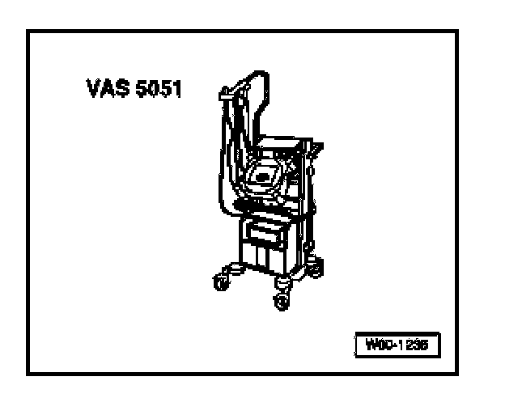

Telematics Control Module -J499-, Coding
Telematics Control Module -J499-, Coding
After replacing the Telephone/Telematics Control Module, the control module must be coded and OnStar(R) system needs to be reconfigured.
Special tools, testers and auxiliary items needed

- VAS 5051 Vehicle Diagnostic Testing and Information System
- Optional: VAS 5052 Vehicle Diagnostic and Service System
- Cable adapter VAS 5051/5a or VAS 5051/6a
NOTE:
- DO NOT exchange Telephone/Telematics Control Modules between vehicles. Each module contains specific Station Identification (STID) and Electronic Serial Number (ESN) data unique to the VIN. This data is used by OnStar(R) and National Cellular Telephone Network to identify the vehicle and administer the customer's account.
- Using the VAS 5051 Vehicle Diagnostic Testing and Information System or VAS 5052 Vehicle Diagnostic and Service System in operating mode "Guided Fault Finding, and function "-J499- Telematics control module, replacing" it is possible to read the Telematics control module coding from the existing module before removal. Note code prior to removal in order input code into replacement control module.
- Connect VAS VAS 5052 with adapter cable to Data Link Connector (DLC) and select mode "Guided Fault Finding"
- Enter appropriate model, equipment and model year information and press ">" to confirm.
After all Control Modules have been registered and DTC memories checked:
- Select "Go to"
- Select "Function/Component Selection"
- Select "Body (Repair Group 01; 27; 50 to 97"
- Select "Electrical System (Repair Group 27; 90 to 97)"
- Select "01-Systems capable of self-diagnosis"
- Select "Telematic NAR"
- Select "Telematic NAR functions".
- Select "Coding Telematic control module"
- Follow testers prompts.